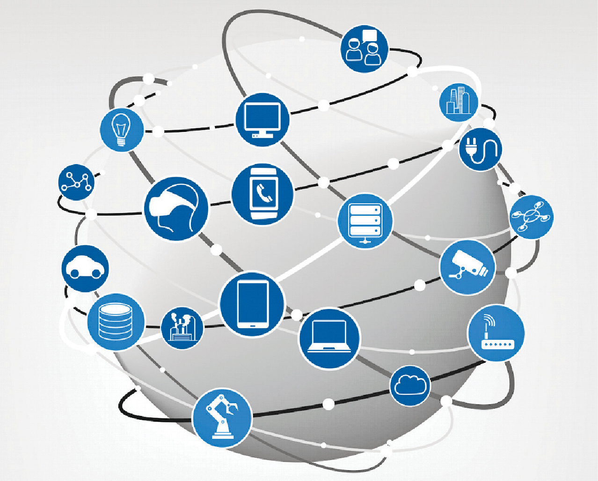

Most traditional communication media, including telephony, radio, television, paper mail and newspapers are reshaped, redefined, or even bypassed by the Internet, giving birth to new services such as email, Internet telephony, Internet television, online music, digital newspapers, and video streaming websites. Newspaper, book, and other print publishing are adapting to website technology, or are reshaped into blogging, web feeds and online news aggregators. The Internet has enabled and accelerated new forms of personal interactions through instant messaging, Internet forums, and social networking services. Online shopping has grown exponentially for major retailers, small businesses, and entrepreneurs, as it enables firms to extend their "brick and mortar" presence to serve a larger market or even sell goods and services entirely online. Business-to-business and financial services on the Internet affect supply chains across entire industries.
The Internet has no single centralized governance in either technological implementation or policies for access and usage; each constituent network sets its own policies.[4] The overreaching definitions of the two principal name spaces in the Internet, the Internet Protocol address (IP address) space and the Domain Name System (DNS), are directed by a maintainer organization, the Internet Corporation for Assigned Names and Numbers (ICANN). The technical underpinning and standardization of the core protocols is an activity of the Internet Engineering Task Force (IETF), a non-profit organization of loosely affiliated international participants that anyone may associate with by contributing technical expertise.[5] In November 2006, the Internet was included on USA Today's list of New Seven Wonders.[6]
